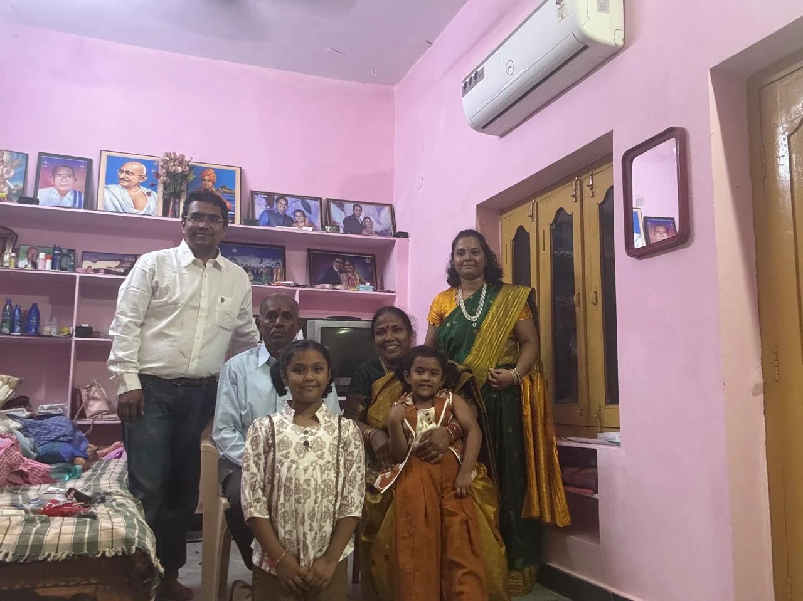

Dr. Srikanth Nakka | Interventional Cardiologist in Kompally, Hyderabad
Qualifications, clinical experience and professional journey.

Qualifications and clinical experience
Consultant Interventional Cardiologist at Sri Purna Cardiac Care
Dr. Srikanth Nakka is a Consultant Interventional Cardiologist seeing patients at Sri Purna Cardiac Care, Raichandani Orion Mall, Kompally, Hyderabad. He completed MBBS at Osmania Medical College, DNB in General Medicine at DDU Hospital, New Delhi, and DM in Cardiology at NIMS, Hyderabad.
Before joining Sri Purna Cardiac Care, Dr. Nakka served as an Assistant Professor at NIMS and as a Consultant Cardiologist at Yashoda Hospital, Secunderabad. His clinical focus includes coronary artery disease, high blood pressure, cholesterol management, arrhythmias, heart failure evaluation and preventive cardiology.
Medical qualifications
Consultation and cardiac services
Consultations are available for heart-related concerns, risk assessment and preventive care. Clinic services include cardiology consultation, ECG, 2D echocardiography, TMT stress testing, Holter monitoring and blood pressure monitoring. Tests are recommended according to individual clinical needs.
Clinic: Shop 208, 2nd Floor, Raichandani Orion Mall, beside V 2 Fitness, Kompally, Hyderabad.
Consultation hours: Monday–Sunday, 6:00 PM–9:00 PM.